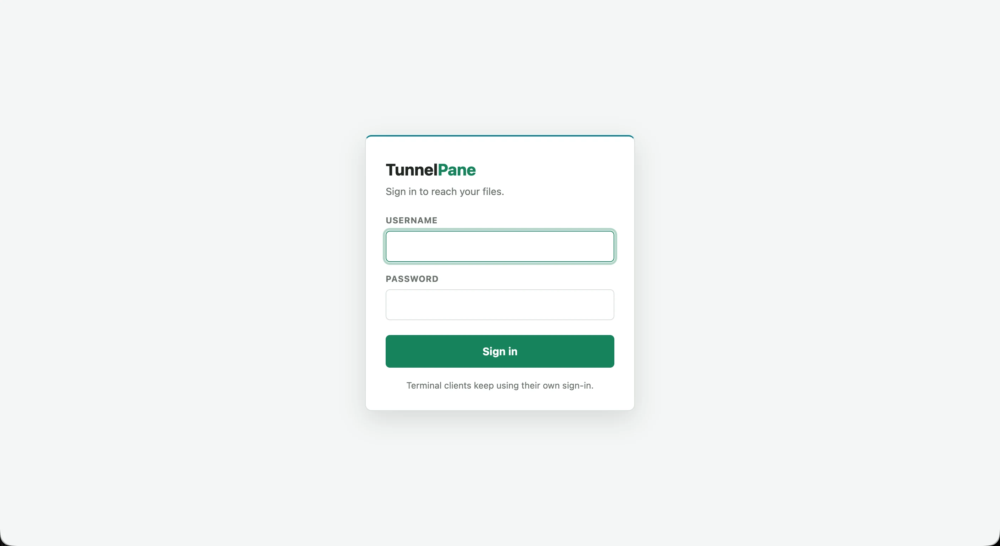
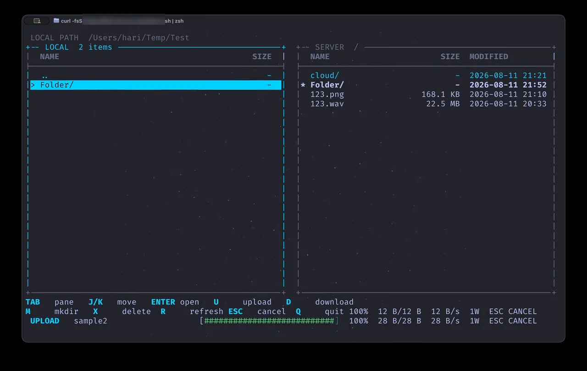
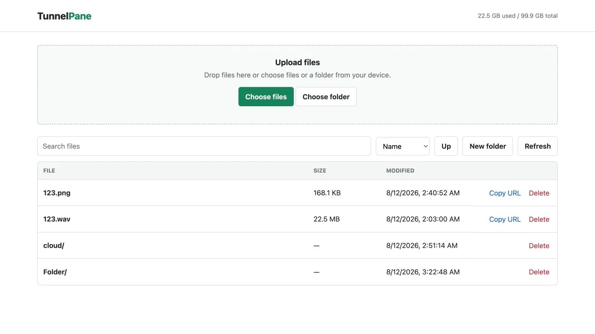

TunnelPane
A self-hosted file transfer service with a browser interface and two-pane terminal clients — built to run behind an HTTPS reverse proxy or Cloudflare Tunnel with no SSH exposure and no inbound port forwarding.
- Role
- Full-stack Developer
- Ownership
- Independent build
- Scope
- Server, browser UI, two clients
- Delivery
- Open source, MIT



The Challenge
Moving files to a home server usually means one of two compromises: exposing SSH and forwarding a router port, or handing the files to a third-party cloud service. The first widens the attack surface on a residential network; the second gives up control of the data.
TunnelPane takes a third route. The service listens on loopback only and is reached through an HTTPS reverse proxy or a Cloudflare Tunnel, so there is no inbound port to forward and no SSH daemon on the public internet. What it adds on top is a transfer experience good enough to actually use daily — from a browser or from a terminal.
My Role
I built the whole thing: the Node.js server and its chunked transfer protocol, the browser interface, both terminal clients, the container setup, and the authentication and hardening model.
What I Delivered
- Browser interface: Folder navigation, creation, upload, download, search, sorting, and deletion, with resumable chunked uploads.
- Two-pane terminal clients: A full-screen TUI for zsh and PowerShell with colour-coded panes, aligned file metadata, and keyboard navigation.
- Parallel transfers: Chunked uploads and HTTP range downloads across a configurable worker pool, defaulting to four and tunable from one to eight.
- Recursive folder uploads: Nested and empty directories are preserved rather than flattened.
- Live progress: Percentage, verified bytes, throughput, and active worker count, with cancellable transfers throughout.
- Containerised deployment: Docker setup running on a read-only container filesystem.
Key Decisions
Loopback by default. The server binds to 127.0.0.1 unless
deliberately changed. Reaching it requires a tunnel or reverse proxy, which makes the
safe configuration the default one rather than something you have to remember to do.
No credentials in the launchers. The terminal clients are fetched over HTTPS and piped straight into a shell, so the launcher scripts are public by definition. They prompt for a username and a masked password at runtime instead of embedding anything, and the server stores only a SHA-256 hash.
Chunked transfers rather than single requests. Direct single-request uploads are capped at 95 MB by the proxy layer, so both clients split files into 16 MB chunks. That lifts the practical ceiling to available disk, and makes transfers resumable and cancellable as a side effect.
Two front ends, one protocol. The browser and terminal clients speak the
same chunked HTTP API. Adding the TUI required no server-side special casing, and plain
curl and wget still work against the same endpoints.
Hardening
- Basic authentication over HTTPS with only a SHA-256 password hash stored server-side.
- Authentication throttling against brute-force attempts.
- Rejection of hidden path segments, traversal attempts, and oversized names.
- Read-only container filesystem, with the storage volume as the only writable path.
Outcome
TunnelPane is open source under MIT and runs as a single Docker service. The demo walks through a rejected sign-in, masked-password authentication, pane navigation, parallel transfers, a recursive folder upload, and server-side folder browsing.